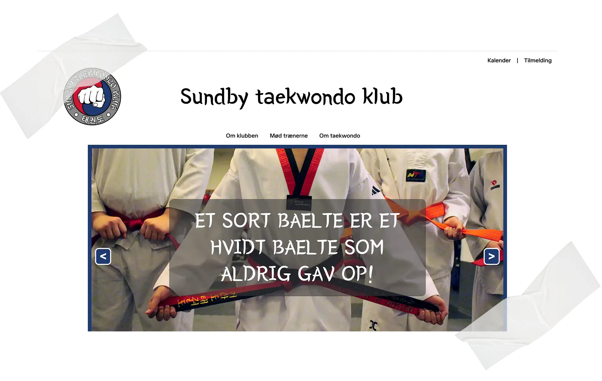
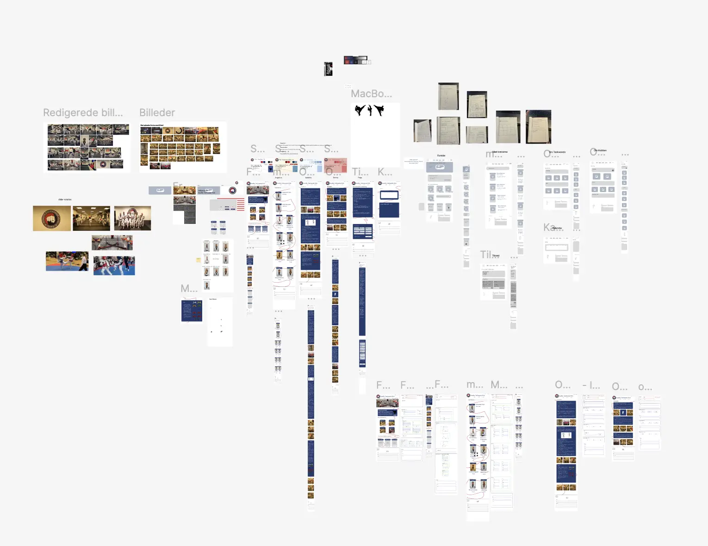

Tema 5 - Grundlæggende Indhold
Sundby Taekwondo Klub
Tema Beskrivelse
I dette tema har jeg arbejdet med indholdsproduktion fra idé til færdigt resultat, herunder foto, redigering og animeret grafik. Jeg har brugt mine tidligere færdigheder til at redesigne en virksomheds hjemmeside og fået en bedre forståelse for, hvordan visuelt indhold bruges professionelt.
Opgave Beskrivelse
Under dette tema blev vi sat til at lave et redesign af en eksisterende hjemmeside. I denne opgave arbejde vi i grupper, og fokuserede på hvad vi havde lært i tidligere temaer for at lave det mest professionelle site til virksomheden. Samtidig havde vi meget fokus på indholdet på siden.
Proces, løsning og resultat
Dette site arbejde vi på som en gruppe af 4. Vi havde meget fokus på at arbejde i Git, hvor vi lavede branches, publicerede dem og branced dem med main.
Her da vi lavede virksomhedssite havde vi meget fokus på processen og kom igennem, ideudvikling, design processen, samt koden. Vi startede ud med at vælge virksomheden Sundby Taekwondo Klub hvis hjemmeside vi ville redesign, hvorefter vi researchede deres hjemmeside, samt andre Taekwondo klubbers hjemmesider.
Herefter begyder vi at kigge på style-tiles og moodboard, for at se hvilken stil hjemmesiden skulle have, disse style-tiles fil vi også testet.
Derefter fokuserede vi på prototyper og wireframe for at kunne gøre det nemmere for os når vi skulle kode, så vi fik lavet både low-fi og hi-fi prototyper af hjemmesiden. Alt dokumentationen kan man se inde på Figma hvis man kligger på billedet.
Da vi var færdige med dette var vi ude i klubben og tage billeder under en af Taekwondo timerne som vi kunne bruge inde på siden. Dem fik vi redigeret ind så de passede til siden.
Vi fik kodet hjemmesiden med både HTML, CSS og JavaScript og fik lavet en masse forskellige test. Vi fik brugt alt vores tidligere viden fra tidligere temaer, samt at vi lærte nogle nye ting undervejs, der hjalp os frem til det endelige resultat.
Besøg siden →